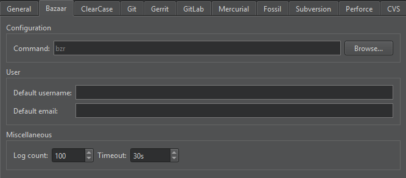
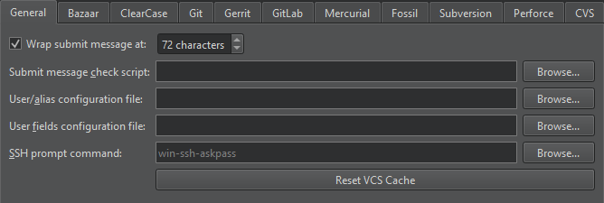

Set up version control systems
Qt Creator uses the version control system's command-line clients to access your repositories. Make sure that the command-line clients are in the PATH environment variable, or specify the path to the command-line client executable in the version control system specific tab in Preferences > Version Control.

The other configuration options depend on the version control system. After you set up the version control system, use the command line to check that everything works (for example, use the status command). If no issues arise, you should be ready to use the system also from Qt Creator.
For more information on using Git for Windows, see Using Git for Windows.
General VCS preferences
Select Preferences > Version Control > General to specify settings for submit messages:

- Wrap submit messages at limits the line length of a submit message to the specified number of characters.
- Submit message check script is a script or program that performs checks on the submit message before submitting. The submit message is the script's first parameter. If there is an error, the script should output a message on standard error and return a non-zero exit code.
- User/alias configuration file is a text file that lists author names in mailmap format. For each author, you must specify a real name and email address and optionally an alias and a second email address. For example:
Jon Doe <Jon.Doe@company.com> jdoe <jdoe@somemail.com> Hans Mustermann <Hans.Mustermann@company.com> hm <info@company.com>
After you specify a file in this field, you can select authors as values of the submit message fields in the Nicknames dialog.
- User fields configuration file is a simple text file consisting of lines specifying submit message fields that take authors as values, for example:
Acked-by: Initial-patch-by: Reported-by: Rubber-stamped-by: Signed-off-by: Tested-by:
After you specify a file in this field, you can add authors as values of the submit message fields when submitting changes. If you also specified a User/alias configuration file, you can select authors in the Nicknames dialog.
- SSH prompt command specifies an ssh-askpass command that you can use (on Linux) to prompt the user for a password when using SSH. For example,
ssh-askpassorx11-ssh-askpass, depending on the ssh-askpass implementation that you use. - Reset VCS Cache resets the version control system configuration to a state known to Qt Creator after you change it from the command line, for example.
See also Version Control Systems.